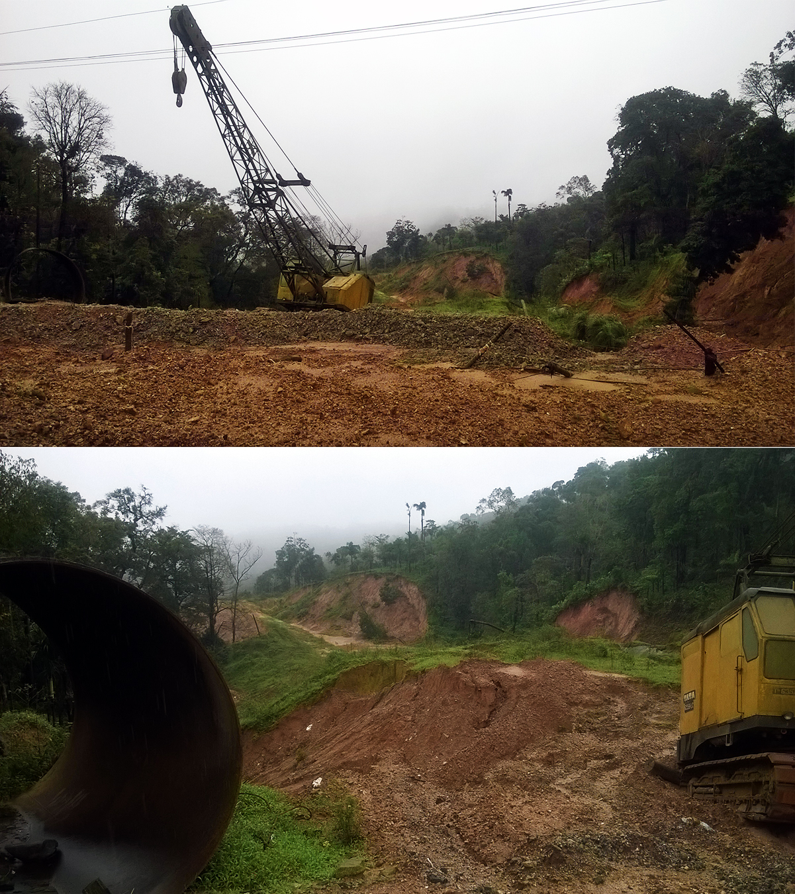

While the state celebrates the final countdown for the Yettinahole Integrated Drinking Water Project, a silent disaster is creeping toward coastal Karnataka.
With Stage 1 already functional and the final gravity canals locked for a 2027 completion, the lifeline of Tulunadu—the Netravati River basin—is being systematically choked at its very source in the Western Ghats.
For the people of Mangalore, Udupi, and the surrounding coastal belt, the countdown to 2027 isn't a celebration. It's a ticking clock toward a massive ecological crisis. Here is how the completion directly hits our taps and fields:
1. The Salinity Ingress Threat
By diverting massive volumes of monsoon water from headwaters like Yettinahole, Kadumanehole, and Kerihole, the natural freshwater pressure pushing down toward the Arabian Sea will drastically drop.
.jpg)
2. Sea Water Moving Inland
When freshwater flow decreases, dense saltwater from the ocean forcefully pushes its way miles upward into the river channels. From next year onward, this means coastal drinking water lifting plants face the direct threat of pumping brackish, salty water into local homes.
3. Ruined Agricultural Belts
The ingress of saltwater doesn't just ruin drinking water; it seeps directly into the coastal groundwater table, destroying the fertile agricultural soil along the riverbanks that Tuluva farmers have cultivated for generations.

4. The Costly Discrepancy
While over ₹18,200 crore has already been spent on an unscientific hydrological model promising 24 TMC of water to eastern districts, the actual yield at the source is heavily contested by local scientists. Tulunadu is paying the ultimate ecological price for a political gamble.
5. An Existential Threat to Tulu Civilization
What mainstream planners fail to realize is that the Netravati River basin is not an unpopulated wilderness—it is the literal demographic heart of our people. Data shows that over 65% to 70% of the entire Tulu-speaking population resides directly within or depends completely upon this single river basin and its coastal drainage network.
From the dense agrarian villages along its banks to the hyper-urban economic engines of Mangalore and Bantwal, the Netravati sustains the vast majority of the Tuluva population. Altering its flow doesn't just disrupt pipelines; it threatens the food security, drinking water, and cultural ecosystem of nearly three-quarters of the Tulu civilization. If the river dries up or turns salty, the very cradle of our language, traditions, and community identity faces displacement.
"The Western Ghats are the cradle of our rivers and our culture. Diverting our natural wealth without assessing local damage is a historical injustice to the coast."
The survival of our coastal ecosystem depends entirely on immediate, transparent hydrological assessments before the pumps go into overdrive next year.